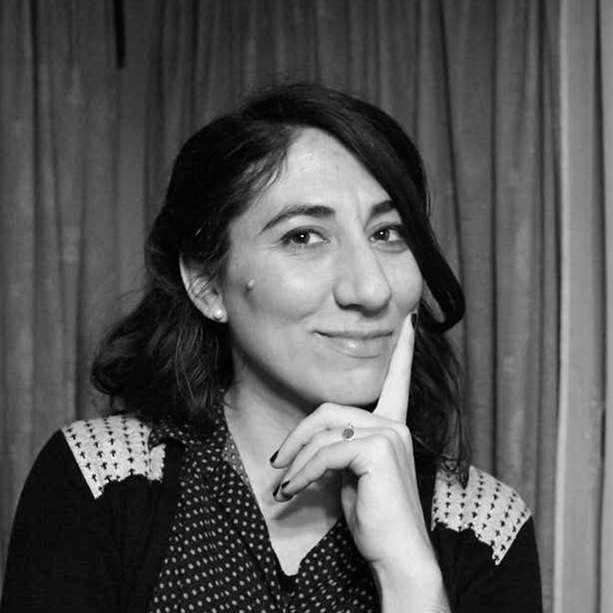

Río Cuarto, Cba.
Diseñadora gráfica espacializada en diseño editorial, letrista, calígrafa y docente.
Realizó sus estudios de grado en la Universidad de Mendoza, donde se recibió de Licenciada en diseño con especialidad en gráfica. Posteriormente se recibió de Magister en gestión del diseño para los desarrollos regionales, en el Facultad de Artes y Diseño de la Universidad Nacional de Cuyo.
Desde 2012 se desempeña como docente en las cátedras de diseño editorial, taller de diseño, metodología y teoría general del diseño de la Universidad de Mendoza, sede Río Cuarto.
Admiradora de los libros y de las letras, su mayor pasión es la composición de páginas y de glifos. Ha tomado cursos de caligrafía y lettering con María Eugenia Roballos, Marcelo Pellizo, Panco Sassano y Eduardo Pepe.
Charras, Cba.

Diseñador Gráfico especializado en branding y editorial, ilustrador y fotógrafo.
Realizó sus estudios en la Universidad de Mendoza, donde se recibió de Licenciado en Diseño con especialidad en gráfica; y posteriormente, participó como docente adscrito en las cátedras de diseño editorial, taller de diseño, metodología y teoría general del diseño.
Práctico y concreto. Amante de la materialidad y las texturas, ha realizado cursos de encuadernación, troquelado e impresión. Entusiasta de la gastronomía y la panificación. Estudiante de desarrollo web.